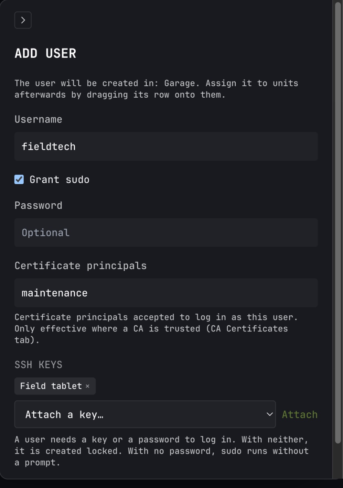

Access: SSH keys and device users
Add your SSH keys and create the Linux users your nodes should have.
On Credentials you add SSH keys and create the Linux users the agent maintains on your nodes. Where a user applies follows the unit rules on Organizational units and policies.
Add an SSH key
- Open Credentials and the SSH Keys tab.
- Click Add SSH key.
- Under Paste public key, type an Alias.
- Paste one public key line, such as
ssh-ed25519 …. - Click Create Key.

Paste one key per entry. A value with several lines saves, but the device refuses it. A key grants nothing until you attach it to a user.
Generate keypair creates a key the platform uses to adopt devices over the network. You don't log in with it.
Create a user on a unit
- Open the Users tab.
- Select the unit in the left rail, or All nodes for the whole account.
- Click Add user.
- Type the Username.
- Tick or clear Grant sudo.
- Pick your key under SSH keys and click Attach.
- Click Create user.

A sudo user with no password gets sudo without a prompt on every node in its scope. Set a Password if you want one. The device only ever receives a salted hash of it.
Click a user to change it. Changes in that panel save at once.
What happens on the devices
The account appears on online nodes right away and on offline nodes when they reconnect. A node in the recovery system gets it once it is back on its installed OS.
Deleting a user locks the account on its nodes and keeps the home directory. The same happens when a user loses its last key and has no password. Accounts you created by hand on a node are never touched.
To check one node, open it and go to Properties → Credentials. Scan lists the real accounts on its disk, marked managed or unmanaged.

If you do lock yourself out, add a key or a password to a user in that scope. The change reaches the node over the agent's own connection.
Trust a CA for certificate logins
Add your certificate authority's public key on CA Certificates and drag it onto a unit or All nodes. A node then accepts a certificate signed by that CA when it names one of a user's Certificate principals.
Next: Secrets and variables.